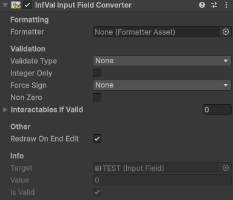

Input Field
Turn a Unity InputField or TMP_InputField into an InfVal input field.
InfValInputField is a MonoBehaviour that converts a standard Unity
InputField or TMP_InputField into an
InfVal input field.
Create an input field GameObject (right-click > UI > InputField or TextMeshPro - InputField), then attach the component (Add Component > UI > InfVal Input Field Converter).

InfValInputField component
- Formatter: Optional override. If empty, the Configuration default is used.
- Validate Type: How invalid input is handled:
None,ChangeColor, orDisallowInvalid(blocks characters that would make the input invalid). - Valid / Invalid Color: Colors applied to the text when Validate Type is ChangeColor.
- Integer Only: Treat non-integer values as invalid.
- Force Sign: Restrict to positive or negative values only.
- Non Zero: Treat zero as invalid.
- Interactables If Valid: UI Selectables that are only enabled while the input is valid.
- Redraw On End Edit: Replace the typed text with a clean formatted representation when the user finishes typing.
Scripting members:
value: Get or set the current InfVal.isValid: Whether the current value passes all validation constraints.activeFormatter: The formatter in use (assigned or Configuration default).target: The underlyingInputFieldorTMP_InputField.